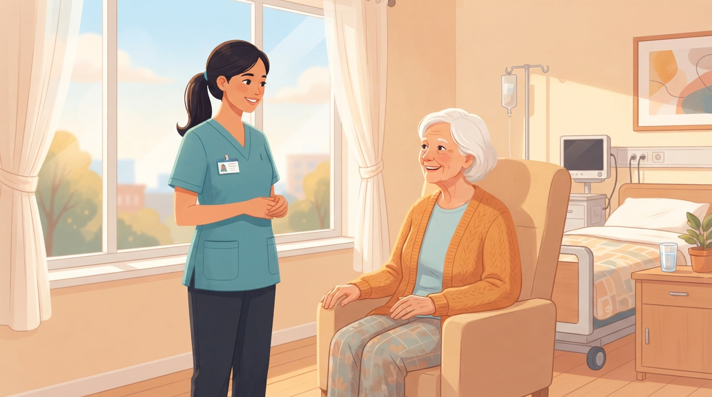
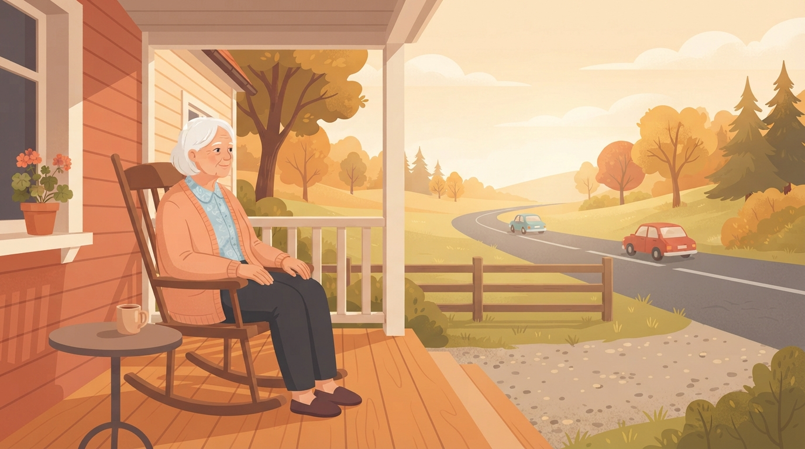
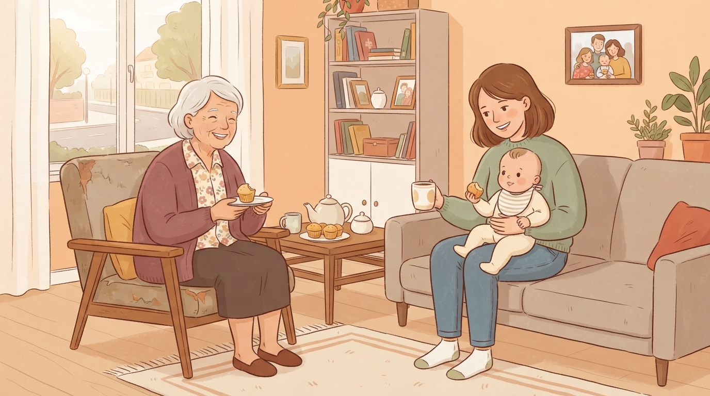
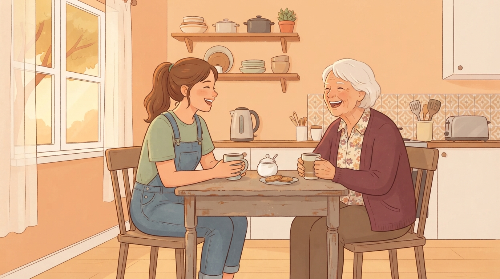

<!DOCTYPE html>
<html lang="es">
<head>
  <meta charset="UTF-8">
  <meta name="viewport" content="width=device-width, initial-scale=1">
  <!-- Cambia este título por el de tu proyecto -->
  <title>La continuidad de los cuidados tras el alta hospitalaria en personas mayores en situación de dependencia: intervención del Trabajo Social
  <link rel="preconnect" href="https://fonts.googleapis.com">
  <link rel="preconnect" href="https://fonts.gstatic.com" crossorigin>
  <link href="https://fonts.googleapis.com/css2?family=Atkinson+Hyperlegible:wght@400;700&family=Literata:opsz,wght@7..72,500;7..72,700&display=swap" rel="stylesheet">

  <!-- =========================================================
       ESTILOS. No hace falta tocar nada de esta parte.
       ========================================================= -->
  <style>
    :root {
      --fondo: #EEF2EC;
      --superficie: #FFFFFF;
      --texto: #1F3A4D;
      --texto-suave: #4F6573;
      --acento: #2F7D6D;
      --borde: #C9D6CF;
      color-scheme: light;
    }
    @media (prefers-color-scheme: dark) {
      :root {
        --fondo: #142630;
        --superficie: #1C3240;
        --texto: #E6EEEA;
        --texto-suave: #A9BCC4;
        --acento: #6CC3AE;
        --borde: #2E4A57;
        color-scheme: dark;
      }
    }

    * { box-sizing: border-box; }

    body {
      margin: 0;
      background: var(--fondo);
      color: var(--texto);
      font-family: "Atkinson Hyperlegible", Verdana, sans-serif;
      font-size: 1.125rem;
      line-height: 1.6;
    }

    header, main, footer {
      max-width: 60rem;
      margin: 0 auto;
      padding: 0 1.25rem;
    }

    header { padding-top: 3rem; }

    h1, h2 {
      font-family: "Literata", Georgia, serif;
      line-height: 1.2;
      margin: 0 0 0.5rem;
    }
    h1 { font-size: clamp(2rem, 5vw, 3.25rem); }
    h2 { font-size: 1.6rem; color: var(--acento); }

    .subtitulo {
      color: var(--texto-suave);
      max-width: 40rem;
      margin: 0 0 2rem;
    }

    section { margin: 3.5rem 0; }
    section > p { max-width: 40rem; }

    img { max-width: 100%; display: block; }

    /* PASO 3: imagen de cabecera */
    .imagen-cabecera {
      width: 100%;
      aspect-ratio: 16 / 9;
      object-fit: cover;
      border-radius: 1.25rem;
    }

    /* PASO 4: galería */
    .galeria {
      display: grid;
      grid-template-columns: repeat(auto-fit, minmax(15rem, 1fr));
      gap: 1.5rem;
    }
    .galeria figure {
      margin: 0;
      background: var(--superficie);
      border: 1px solid var(--borde);
      border-radius: 0.75rem;
      overflow: hidden;
    }
    .galeria img {
      width: 100%;
      aspect-ratio: 4 / 3;
      object-fit: cover;
    }
    .galeria figcaption {
      padding: 0.75rem 1rem 1rem;
      font-size: 0.95rem;
      color: var(--texto-suave);
    }

    /* PASO 6: vídeo */
    .video-contenedor {
      position: relative;
      width: 100%;
      aspect-ratio: 16 / 9;
      border-radius: 0.75rem;
      overflow: hidden;
      background: #000;
    }
    .video-contenedor iframe {
      position: absolute;
      inset: 0;
      width: 100%;
      height: 100%;
      border: 0;
    }

    /* Aviso que se ve mientras una zona está vacía */
    .zona:not(:has(*)) {
      border: 2px dashed var(--borde);
      border-radius: 0.75rem;
      padding: 2.5rem 1rem;
      text-align: center;
      color: var(--texto-suave);
    }
    .zona:not(:has(*))::before { content: attr(data-aviso); }

    footer {
      padding-top: 2rem;
      padding-bottom: 3rem;
      border-top: 1px solid var(--borde);
      color: var(--texto-suave);
      font-size: 0.95rem;
    }
  </style>
</head>
<body>

  <header>
    <!-- Cambia este título por el de tu proyecto -->
    <h1>La continuidad de los cuidados tras el alta hospitalaria en personas mayores en situación de dependencia: intervención del Trabajo Social
    </h1>
    <p class="subtitulo">Mi proyecto va sobre las personas mayores en situación de dependencia y la importancia de los cuidados por parte de los profesionales sociales</p>

    <div class="zona" data-aviso="Aquí aparecerá tu imagen de cabecera (paso 3)">
      <!-- PASO 3: CABECERA ============================ INICIO -->

      <!-- PASO 3: CABECERA =============================== FIN -->
    </div>
  </header>

  <main>

    <section id="galeria">
      <h2>Galería</h2>
      <!-- Cambia este párrafo: explica qué muestran tus imágenes -->
      <p>Las imágenes muestran distintos momentos de la vida de una mujer mayor en situación de dependencia: la atención profesional tras el alta hospitalaria, la soledad en su día a día y el apoyo que recibe de su familia y del voluntariado.</p>

      <div class="zona" data-aviso="Aquí aparecerá tu galería de tres imágenes (paso 4)">
        <!-- PASO 4: GALERÍA ============================= INICIO -->
<div class="galeria">
  <figure>
    
    <figcaption>Simboliza la soledad y el aislamiento de muchas personas mayores en situación de dependencia cuando vuelven a casa sin apoyo. La mujer observa el mundo pasar sin poder participar en él. Imagen generada con Gemini (IA).</figcaption>
  </figure>
  <figure>
    
    <figcaption>Representa el apoyo familiar como primera red de cuidados. La visita de la hija y el nieto muestra la importancia del vínculo afectivo, aunque la familia no siempre pueda estar presente a diario. Imagen generada con Gemini (IA).</figcaption>
  </figure>
  <figure>
    
    <figcaption>Representa la intervención y el acompañamiento social. La conversación y las risas con la voluntaria muestran cómo el apoyo externo mejora el bienestar emocional y reduce la soledad. Imagen generada con Gemini (IA).</figcaption>
  </figure>
</div>
        <!-- PASO 4: GALERÍA ================================ FIN -->
      </div>
    </section>

    <section id="video">
      <h2>Vídeo de presentación</h2>
      <p>En este vídeo te contamos el proyecto en menos de un minuto y medio.</p>

      <div class="zona" data-aviso="Aquí aparecerá tu vídeo (paso 6)">
        <!-- PASO 6: VÍDEO =============================== INICIO -->
<div class="video-contenedor">
  <iframe src="https://drive.google.com/file/d/1noMMVFd_7zI8Md7oKWEqKAa5I8je8ExUiLNQRUL1MoI/preview"
          title="Vídeo de presentación del proyecto"
          allow="autoplay; fullscreen" allowfullscreen></iframe>
</div>
        <!-- PASO 6: VÍDEO ================================== FIN -->
      </div>
    </section>

    <!-- Otros días añadiremos aquí más secciones de la web -->

  </main>

  <footer>
    <p>Proyecto de la asignatura Informática para el Trabajo Social · Universidad de Cádiz.
      Las imágenes de esta web se han generado con Gemini (IA).</p>
  </footer>

</body>
</html>